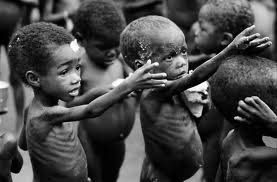
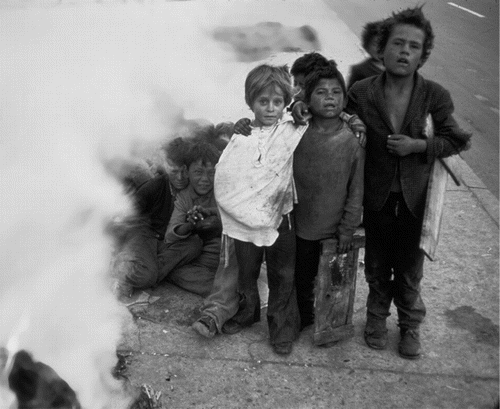

Around the world, millions live in constant suffering.  The status quo in many nations in the South Pacific, Africa, South America, and some former Soviet nations, is poverty, war, instability, and disease. It is fairly common for children and their parents to go without shoes, to lack vaccines and treatments for basic ailments, and to suffer from forms of food insecurity that are boggling to a mind living safely in the industrialized world. In some nations, orphaned children have no other recourse than to roam the streets in packs, scavenging for food and cheap forms of drugs that help them forget their misery.  Clean water is a luxury, and huge portions of the world do not have access to clean, safe drinking water. Ancient social norms and traditions keep women and certain racial groups in subservient positions, and impede social and economic progress.
We can't entirely understand in the industrialized world how easy we have it, even though we are told about it almost every day. If we are compassionate people, if we have an even trifling concern with human life and a desire to lessen the suffering of others, can we really justify simply living out our lives in comfort and ease, and failing to take drastic action? Do we really believe that peace can really ever be a worldwide reality as long as some people have so little and must scrape every day to survive? We simply can't, and as the truly fortunate, we must take action to help our fellow brothers and sisters of humanity defeat the suffering they face.